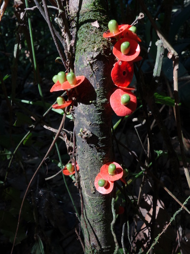

Olacaceae
Olax Family
Olacaceae is a family of trees, shrubs, and lianas belonging to the order Santalales within the Core Eudicots. In its strict sense (sensu stricto, following APG IV), the family is relatively small, comprising only 3 genera (Olax, Dulacia, Ptychopetalum) and about 55 species. Distributed pantropically, many species are known or suspected to be root hemiparasites. They typically have alternate simple leaves, small flowers (often 3-6 merous), and drupaceous fruits often enclosed by an enlarged calyx.
Overview
The Olacaceae family, as narrowly defined by the Angiosperm Phylogeny Group (APG) system, includes only three genera: Olax (pantropical), Dulacia (South America), and Ptychopetalum (South America and Africa). This circumscription resulted from molecular studies showing that the traditional, much larger Olacaceae was polyphyletic. Numerous genera previously included are now placed in separate, related families within the Santalales order (e.g., Ximeniaceae, Aptandraceae, Erythropalaceae, etc.).
Members of Olacaceae sensu stricto are woody plants found in tropical regions worldwide. Many species are confirmed or suspected root hemiparasites, forming connections (haustoria) to the roots of host plants to obtain water and nutrients, while still performing photosynthesis.
Some species have local economic or traditional uses. For example, leaves and fruits of some Olax species are eaten locally. Ptychopetalum olacoides (Muira Puama) from the Amazon basin is used in traditional medicine and marketed as an aphrodisiac. However, the family is not globally significant economically.
Quick Facts
- Scientific Name: Olacaceae R.Br.
- Common Name: Olax family
- Number of Genera: 3 (sensu stricto: Olax, Dulacia, Ptychopetalum)
- Number of Species: Approximately 55 (sensu stricto)
- Distribution: Pantropical.
- Evolutionary Group: Eudicots - Core Eudicots - Santalales
Key Characteristics (Olacaceae sensu stricto)
Growth Form and Habit
Trees, shrubs, or lianas (woody vines). Often root hemiparasites.
Leaves
Leaves are alternate, simple, entire, and exstipulate (lacking stipules). Leaf blades often dry greenish or blackish.
Inflorescence
Inflorescences are typically axillary, sometimes terminal or ramiflorous (on branches), usually racemes, panicles, spikes, or clusters.
Flowers
Flowers are typically bisexual (rarely unisexual), actinomorphic (radially symmetrical), small, and usually 3- to 6-merous. Key features include:
- Calyx: Small, cup-shaped, with (3-)4-6 lobes or teeth, often persistent and accrescent (enlarging, sometimes becoming fleshy) in fruit.
- Corolla: Petals (3-)4-6, free or fused only at the base, often valvate in bud, sometimes hairy on the inner surface.
- Androecium: Stamens variable, often twice as many as petals or fewer. Frequently, only 3 fertile stamens are present, alternating with petaloid staminodes (sterile stamens). Stamens/staminodes often attached to the petals (epipetalous).
- Gynoecium: Ovary is superior or semi-inferior (partly fused to calyx), composed of typically 3 fused carpels (syncarpous). It often appears unilocular above but is 3-locular at the base, containing 3 ovules pendulous from a free-central placenta. Style is single, short or elongated, with a small, often 3-lobed stigma.
Fruits and Seeds
The fruit is a drupe (a fleshy fruit with a single hard stone). The drupe is often partially or completely enclosed by the persistent, enlarged, and sometimes fleshy calyx. The seed contains endosperm.
Chemical Characteristics
May contain alkaloids, saponins, and tannins. Aluminium accumulation has been reported in some species.
Field Identification (Olacaceae sensu stricto)
Identifying Olacaceae s.s. involves recognizing their woody habit (often parasitic), alternate simple leaves, small flowers often with 3 fertile stamens and staminodes, superior/semi-inferior ovary with free-central placentation, and drupaceous fruit enclosed by an accrescent calyx.
Primary Identification Features
- Habit: Trees, shrubs, lianas (Pantropical), often root hemiparasites.
- Leaves: Alternate, simple, entire, exstipulate.
- Flowers: Small, actinomorphic, bisexual (usually), 3-6 merous.
- Calyx: Small, cup-shaped, often accrescent (enlarging) in fruit.
- Petals: 3-6, free or basally connate, often valvate.
- Stamens: Often 3 fertile + staminodes, or twice petals.
- Ovary: Superior or semi-inferior, 3 carpels (usually), 3 ovules on free-central placenta.
- Fruit: Drupe, partially or fully enclosed by persistent, enlarged calyx.
Secondary Identification Features
- Petals/Staminodes: Often hairy inside.
- Habitat: Tropical forests, woodlands.
- Parasitic Habit: Haustorial connections to host roots (requires excavation).
Seasonal Identification Tips
- Year-round: Woody habit and alternate simple leaves are general clues.
- Flowering Season: Small flowers appear, details of stamen number/staminodes and ovary structure are key but require close examination.
- Fruiting Season: The drupe enclosed by the persistent, enlarged calyx is the most distinctive and easily observable diagnostic feature for the family sensu stricto.
Common Confusion Points
- Segregate Families (Ximeniaceae, Aptandraceae, etc.): Genera formerly in Olacaceae s.l. now belong to related Santalales families. These differ in details like ovary structure (e.g., number of locules/ovules), stamen number/arrangement, presence of disc, and specific fruit characteristics (e.g., Ximeniaceae often have 4-merous flowers, 8 stamens, different placentation). Precise identification often requires floral dissection or knowledge of specific genera.
- Santalaceae: Also Santalales, often parasitic. Differ in typically having a single whorl of tepals (petaloid calyx), often inferior ovary, and different fruit details.
- Opiliaceae: Also Santalales, often parasitic. Differ in having flowers with a distinct disc, different stamen arrangement, and drupe not typically enclosed by accrescent calyx in the same way.
- Ebenaceae (Ebony Family): Trees/shrubs with alternate simple leaves, but flowers usually unisexual, petals fused (sympetalous), ovary superior, fruit a berry. (Order Ericales).
Field Guide Quick Reference
Look For:
- Trees, shrubs, lianas (Pantropical)
- Often root hemiparasites
- Alternate, simple, entire leaves
- Small flowers, 3-6 merous
- Calyx small, accrescent in fruit
- Petals 3-6, free/basal connate
- Stamens often 3 + staminodes
- Ovary superior/semi-inferior, free-central placentation
- Drupe enclosed by enlarged calyx
Key Variations:
- Flower part number (3 to 6)
- Stamen/staminode number
- Degree of calyx enlargement in fruit
- Habit (tree, shrub, liana)
Notable Examples (Olacaceae sensu stricto)
The family, in its strict sense, includes these main genera:

Olax spp.
(Olax)
The largest genus, pantropical, comprising shrubs, small trees, or lianas. Often root hemiparasites. Flowers typically have 3 fertile stamens alternating with bifid (two-lobed) staminodes. Fruit a drupe enclosed by the fleshy, accrescent calyx.

Dulacia spp.
(Dulacia)
A genus of trees and shrubs found in tropical South America. Similar to Olax but differs in technical floral details, such as the structure of the staminodes and calyx persistence.

Ptychopetalum spp.
Muira Puama
A small genus of shrubs and small trees found in South America (Amazon) and tropical Africa. Flowers typically 4-merous. Ptychopetalum olacoides from Brazil is known as Muira Puama and used traditionally as an aphrodisiac and nerve tonic.
Phylogeny and Classification
Olacaceae sensu stricto belongs to the order Santalales, a group within the Core Eudicots known for its high prevalence of parasitic and hemiparasitic members.
The traditional Olacaceae family was found to be grossly polyphyletic by molecular studies. The current, much smaller Olacaceae s.s. (Olax, Dulacia, Ptychopetalum) forms a distinct clade within Santalales. Many former members are now placed in newly recognized or resurrected families within the same order, including Aptandraceae, Coulaceae, Erythropalaceae, Octoknemaceae, Strombosiaceae, Ximeniaceae, and others. Olacaceae s.s. appears to be nested within a broader Santalales radiation, but its exact sister relationships require further clarification.
Position in Plant Phylogeny
- Kingdom: Plantae
- Clade: Angiosperms (Flowering plants)
- Clade: Eudicots
- Clade: Core Eudicots
- Order: Santalales
- Family: Olacaceae (sensu stricto)
Evolutionary Significance
Olacaceae s.s. is significant for understanding Santalales evolution:
- Evolution of Parasitism: Contributes to understanding the numerous origins and modifications associated with hemiparasitism within the Santalales order.
- Taxonomic Realignment: The breakup of Olacaceae sensu lato into multiple smaller, monophyletic families based on molecular data is a major example of phylogenetic revision in angiosperm classification.
- Floral Diversity in Santalales: Shows variations in floral merosity, stamen/staminode number, and ovary structure within the order.
- Fruit Evolution: The characteristic drupe enclosed by an accrescent calyx represents a specific fruit/dispersal strategy within the order.